第13回 時系列解析
この回の学習目標
- 定常性・自己相関を説明し、AR・MA・ARMA・ARIMA モデルの性質（分散・自己相関）を導出できる
- コレログラム（ACF/PACF）から次数を同定し、単位根・予測・残差診断の考え方を理解する
- 状態空間モデル・カルマンフィルタ・ARCH/GARCH の概要を押さえる
1. 時系列の構成要素
時系列は トレンド $T_t$、季節変動 $S_t$、不規則変動 $\varepsilon_t$ に分けて考えます。
- 加法モデル $y_t=T_t+S_t+\varepsilon_t$、乗法モデル $y_t=T_tS_t\varepsilon_t$（対数を取ると加法モデル）
- トレンドは 移動平均 で取り出す。季節の周期と同じ長さの移動平均を使うと、季節変動が打ち消される
- 季節調整は、取り出した季節成分を取り除く操作
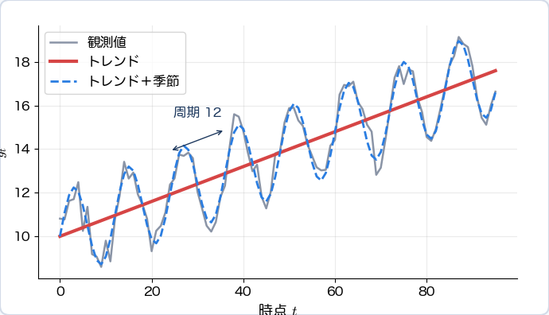
2. 定常性と自己相関
時系列を統計的に扱うには 定常性 が必要です。弱定常 とは、
$$E[X_t]=\mu\ (\text{一定}),\qquad V[X_t]=\sigma_X^2\ (\text{一定}),\qquad\mathrm{Cov}(X_t,X_{t+h})=\gamma(h)\ (\text{ラグ }h\text{ のみに依存})$$
のこと。自己相関係数 $\rho(h)=\gamma(h)/\gamma(0)$ を縦軸、ラグ $h$ を横軸にした図が コレログラム。互いに無相関で分散が一定の系列を 白色雑音 と呼び、あらゆるモデルの部品になります。
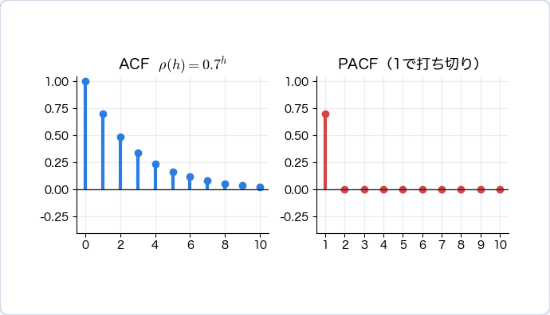
3. AR 過程
AR(1)：$X_t=\phi X_{t-1}+\varepsilon_t$（$\varepsilon_t$ は白色雑音、分散 $\sigma^2$）。
- 定常条件 $|\phi|<1$
- 平均 0、分散 $V[X_t]=\dfrac{\sigma^2}{1-\phi^2}$、自己相関 $\rho(h)=\phi^{h}$（指数的に減衰）
導出：$V[X_t]=\phi^2V[X_{t-1}]+\sigma^2$ で定常なら $V=\phi^2V+\sigma^2$。
AR($p$) は特性方程式 $1-\phi_1z-\cdots-\phi_pz^p=0$ の根がすべて 単位円の外側 にあるとき定常。偏自己相関（PACF）はラグ $p$ で打ち切られます。
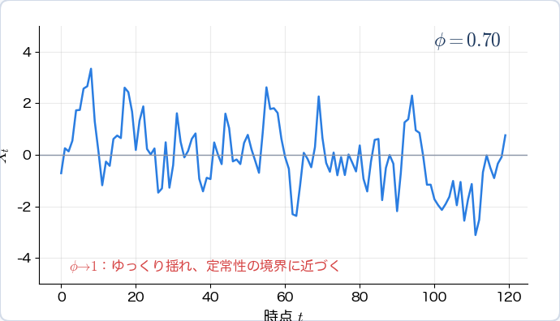
4. MA 過程
MA(1)：$X_t=\varepsilon_t+\theta\varepsilon_{t-1}$。有限個の雑音の和なので 常に定常。
$$V[X_t]=(1+\theta^2)\sigma^2,\qquad\rho(1)=\frac{\theta}{1+\theta^2},\qquad\rho(h)=0\ (h\ge2)$$
つまり 自己相関がラグ $q$ で打ち切られ、偏自己相関は減衰します。$|\theta|<1$ のとき 反転可能（AR($\infty$) に書き直せる）。
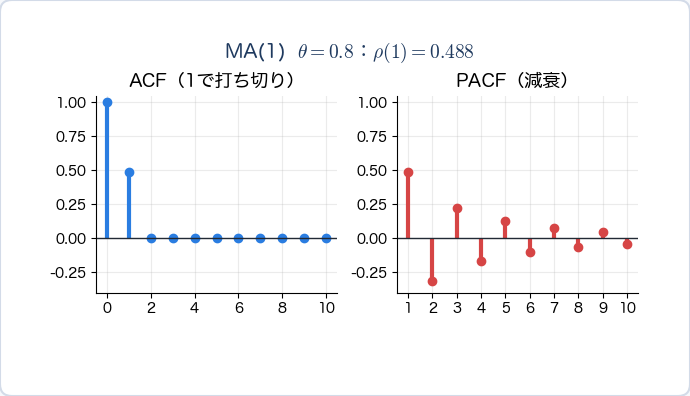
5. 次数の同定
| モデル | 自己相関（ACF） | 偏自己相関（PACF） |
|---|---|---|
| AR($p$) | 減衰 | $p$ で打ち切り |
| MA($q$) | $q$ で打ち切り | 減衰 |
| ARMA | 減衰 | 減衰 |
実際のデータではっきりしないことも多く、AIC などで候補を比べます。
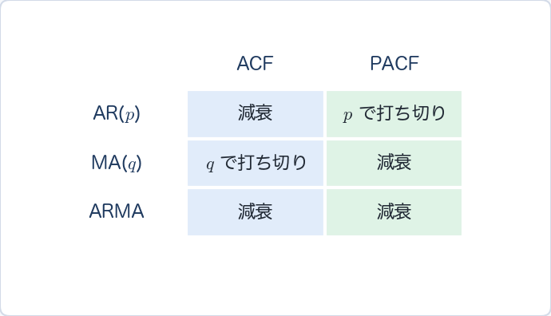
6. ARMA と ARIMA
ARMA($p,q$) は AR と MA の組合せで、少ない母数で表現できます。トレンドのある 非定常 な系列は 差分 $\nabla X_t=X_t-X_{t-1}$ を取って定常にします。$d$ 回差分した系列に ARMA を当てはめたものが ARIMA($p,d,q$) です。ランダムウォーク $X_t=X_{t-1}+\varepsilon_t$ は ARIMA(0,1,0)（1 階差分が白色雑音）。季節性があれば季節差分も使う 季節 ARIMA。差分の取りすぎ（過剰差分）に注意。
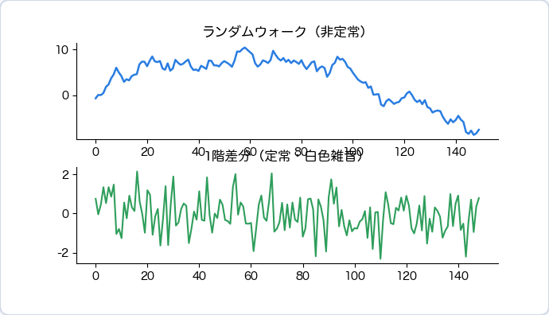
7. 単位根
AR(1) の $\phi=1$ を 単位根 といいます。定常系列は平均のまわりに戻りますが、単位根のある系列は 分散が時間とともに増えます。ディッキー・フラー検定（$H_0$：単位根あり）で調べます。
- 検定統計量は通常の $t$ 分布に従わない（専用の臨界値表を使う）
- 無関係な単位根系列どうしを回帰すると有意に見える 見せかけの回帰 が起きる
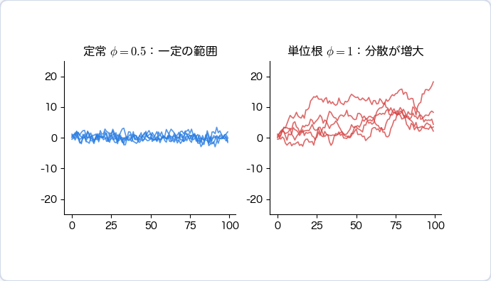
8. 推定と予測
AR のパラメータは自己相関から解く ユール・ウォーカー方程式（AR(1) なら $\hat\phi=\hat\rho(1)$）で推定でき、最尤法・条件付き最小二乗法も使います。
AR(1) の $h$ 期先予測（平均 $\mu$）：
$$\hat X_{T+h}=\mu+\phi^h(X_T-\mu),\qquad\text{予測誤差分散}=\sigma^2\frac{1-\phi^{2h}}{1-\phi^2}$$
先に行くほど予測値は平均に近づき、誤差分散は系列の分散 $\sigma^2/(1-\phi^2)$ に近づきます（予測区間が広がる）。
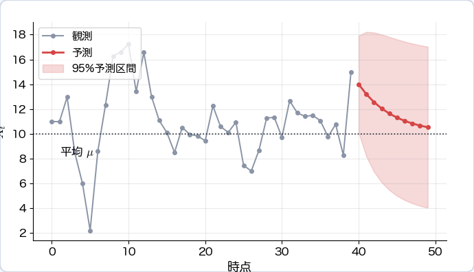
9. モデル選択と残差診断
候補モデルは AIC・BIC で比べます。当てはめ後、残差が白色雑音か を確認します。残差の自己相関がすべて $\pm1.96/\sqrt n$ の帯の内側にあればよく、まとめて検定するのが リュング・ボックスの検定：
$$Q=n(n+2)\sum_{k=1}^m\frac{\hat\rho_k^2}{n-k}\ \sim\ \chi^2_{m-p-q}$$
（自由度は、推定した AR・MA の母数の数を引く。）
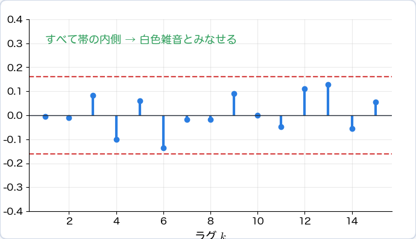
10. 状態空間モデルとカルマンフィルタ
観測できない 状態 が時間とともに変化し、それに雑音が加わったものを観測する、という考え方です。最も簡単な 局所水準モデル：
$$\mu_t=\mu_{t-1}+\eta_t\ (\text{状態}),\qquad y_t=\mu_t+\varepsilon_t\ (\text{観測})$$
カルマンフィルタ は、新しい観測が来るたびに「予測 → 観測との差にゲインをかけて修正」を逐次繰り返して状態を推定します。ゲインは状態と観測の雑音の大きさの比で決まります。ARIMA も状態空間表現できます。
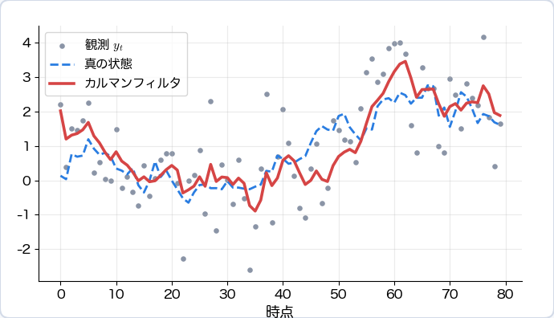
11. ARCH と GARCH
金融データでは変動の大きさが時間とともに変わり、大きな変動が続いて起きます（ボラティリティの集中）。条件付き分散を過去の二乗に依存させる ARCH(1)：$h_t=\alpha_0+\alpha_1X_{t-1}^2$。過去の分散 $h_{t-1}$ にも依存させたものが GARCH。
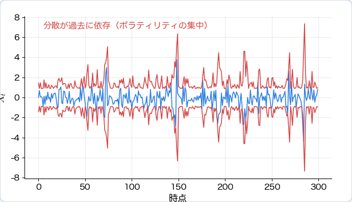
演習問題
演習1 AR(1)
問題 AR(1) で $\phi=0.6$、雑音の分散 $\sigma^2=1.28$。$V[X_t]$、$\rho(2)$、$\gamma(2)$ を求めよ。
解答 $V[X_t]=\dfrac{1.28}{1-0.36}=\mathbf{2.0}$。$\rho(2)=0.6^2=\mathbf{0.36}$。$\gamma(2)=V\cdot\rho(2)=2.0\times0.36=\mathbf{0.72}$。
演習2 MA(1)
問題 MA(1) で $\theta=0.5$。$V[X_t]$、$\rho(1)$、$\rho(2)$ を求めよ。
解答 $V[X_t]=(1+0.25)\sigma^2=\mathbf{1.25\sigma^2}$。$\gamma(1)=\theta\sigma^2$ より $\rho(1)=\dfrac{0.5}{1.25}=\mathbf{0.4}$。ラグ 2 以降は重なる雑音がなく $\rho(2)=\mathbf0$。
演習3 AR(1) の予測
問題 AR(1)、平均 10、$\phi=0.8$、$\sigma^2=4$。最後の観測が 15 のとき、1 期先・2 期先の予測値と、2 期先の予測誤差分散を求めよ。
解答 $\hat X_{T+1}=10+0.8\times5=\mathbf{14}$、$\hat X_{T+2}=10+0.64\times5=\mathbf{13.2}$。2 期先の誤差分散 $=\sigma^2(1+\phi^2)=4\times1.64=\mathbf{6.56}$。
演習4（発展） 定常性の判定
問題 $X_t=1.2X_{t-1}-0.2X_{t-2}+\varepsilon_t$ は定常か。
解答 特性方程式 $1-1.2z+0.2z^2=0$ を解くと $z=1,\ 5$。根の 1 つが単位円上（$z=1$）なので 定常でない（単位根を含む）。$\nabla X_t$ が AR(1)（$\phi=0.2$）になる ARIMA(1,1,0)。
まとめ・チェックリスト
- [ ] 弱定常の定義、自己相関、白色雑音を説明できる
- [ ] AR(1) の分散・自己相関、MA(1) の自己相関を導出できる
- [ ] ACF/PACF の打ち切り・減衰パターンから次数を同定できる
- [ ] 差分・ARIMA・単位根（DF 検定、見せかけの回帰）を説明できる
- [ ] AR(1) の予測値・予測誤差分散、リュング・ボックス検定を使える
- [ ] 状態空間モデル・カルマンフィルタ・ARCH の概要を説明できる
次回：標本調査法（最終回）
動画の音声：VOICEVOX:ずんだもん / VOICEVOX:四国めたん 立ち絵：坂本アヒル様